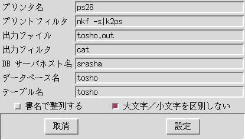

環境設定ダイアログについて

プリンタ名
出力プリンタ。
プリントフィルタ
xtosho の出力は EUC コードのプレーンテキストです。
そのままでプリンタに出力できない場合は、必要な
shell コマンドを書きます。
出力ファイル
検索結果をファイル出力する時に使われるデフォルトのファイル名。
出力フィルタ
プリンタフィルタと同様ですが、ファイル出力の時に使われます。
DB サーバホスト名
図書データベースをサービスしているホスト名です。デフォルトは "srasha"。
ここを別なホストにすれば、プライベートな図書データベースを構築することも可能です。
データベース名
デフォルトは "tosho" です。
テーブル名
デフォルトは "tosho" です。
「書名で整列する」ラジオボタン
ここが押されていると、検索結果は書名順にソートされます。
「大文字／小文字を区別しない」ラジオボタン
ここが押されていると、英文字の大文字、小文字を同じものとみなして検索します。ただし、いわゆる全角、半角は区別されるので注意すること。
[インデックスへ戻る]